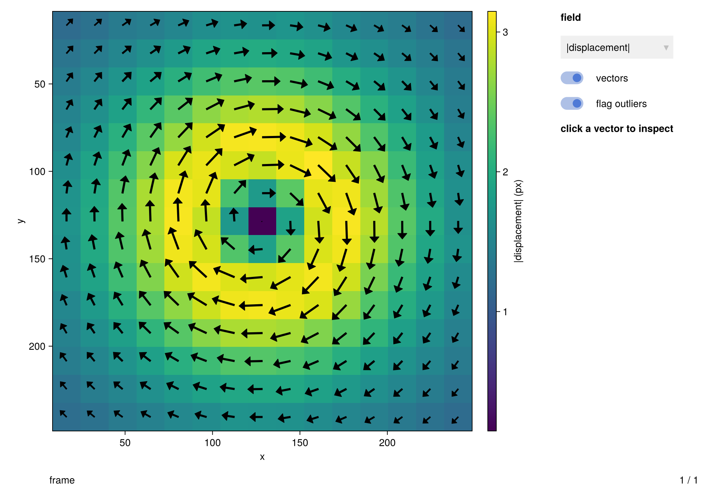
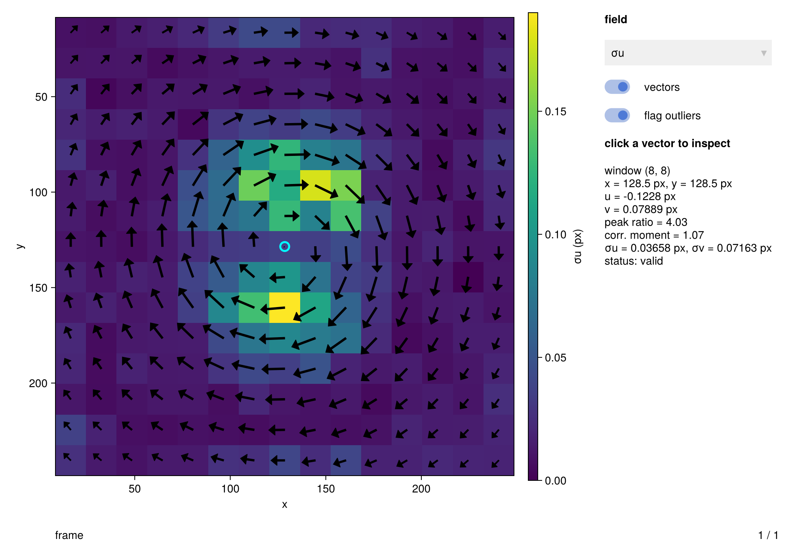
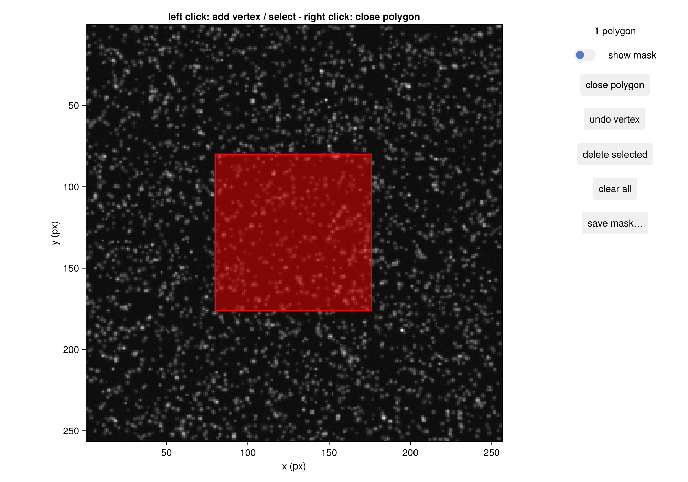
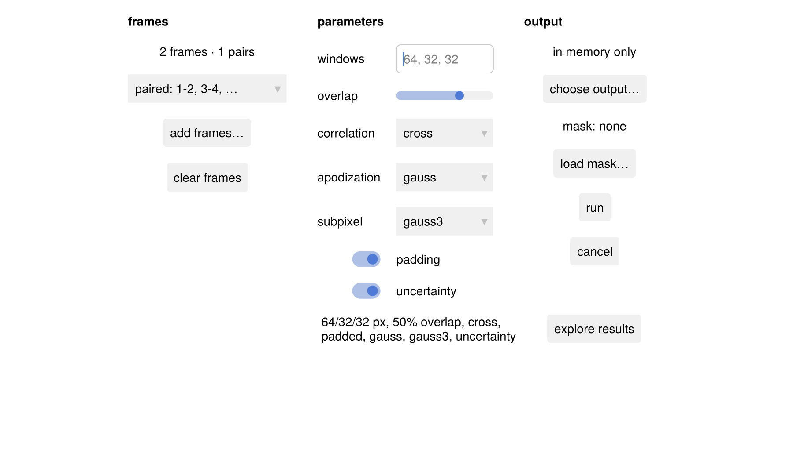
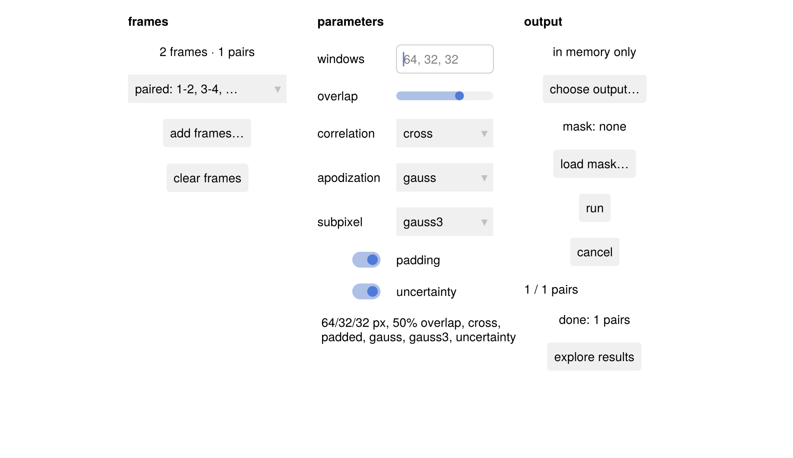
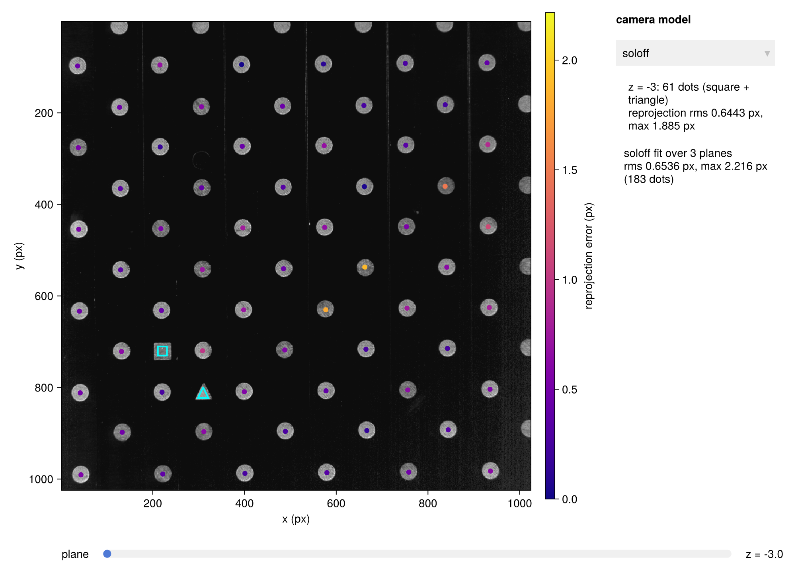

A tour of the GUI
Hammerhead's interactive tools live in a companion package, HammerheadGUI: a result explorer, a polygon mask editor, a batch runner, and calibration diagnostics. Two design facts shape how you use them:
- Every tool is a thin shell over the same API this manual documents. What you click is what you would have typed: the mask editor produces the
Boolmatricesrun_pivtakes, the batch runner writes the JLD2 filesload_resultsreads — the GUI and your scripts mix freely. - Every window is driven by a controller: a plain-Julia object holding the tool's state as
Observables. You can construct it yourself, drive it from the REPL, and any open view follows live. (Why it is built this way: the controller–view split.)
This tutorial drives each tool through its controller, which is how the docs build renders real figures; at your REPL, each Figure below opens as an interactive window instead.
An analysis to explore
The same Lamb–Oseen vortex as the first tutorial, analyzed with uncertainty enabled so the explorer has diagnostic fields to show:
using Hammerhead
using Hammerhead.SyntheticData
using Random
center, rc, Γ = (128.0, 128.0), 40.0, 1200.0
function flow(x, y, z, t)
dx, dy = x - center[1], y - center[2]
r² = dx^2 + dy^2
k = r² < 1e-9 ? Γ / (2π * rc^2) : Γ / (2π * r²) * (1 - exp(-r² / rc^2))
return (-k * dy, k * dx, 0.0)
end
rng = MersenneTwister(42)
imgA, imgB, _, _ = generate_synthetic_piv_pair(flow, (256, 256), 1.0;
particle_density = 0.05, background_noise = 0.03,
z_range = (-1.0, 1.0), rng)
passes = multipass_parameters([64, 32, 32];
padding = true, apodization = :gauss, uncertainty = true)
result = run_piv(imgA, imgB, passes)PIVResult{Float64}(15×15 grid, 0 outliers)The result explorer
result_explorer accepts a PIVResult (or StereoPIVResult), a vector of them, a results-file path, or a prebuilt ResultExplorer controller. Pass the controller when you want to keep a programmatic handle on the view:
using HammerheadGUI
ex = ResultExplorer(result)
fig = result_explorer(ex)
The scalar field is a heatmap in image orientation (y down), the vectors are arrows with outliers flagged red, and for a sequence the slider at the bottom scrubs through frames. The menu on the right lists what available_fields reports for the current result — components, the peak-ratio and correlation-moment diagnostics, and the per-vector σ when the analysis carried uncertainty = true.
Everything the widgets do is a controller call, so we can do the same from code — switch to the u-uncertainty field and inspect the vector nearest a point in the vortex core — and the figure follows:
set_field!(ex, :uncertainty_u)
select_nearest!(ex, 128, 128)
fig
describe_selection(ex)"window (8, 8)\nx = 128.5 px, y = 128.5 px\nu = -0.1228 px\nv = 0.07889 px\npeak ratio = 4.03\ncorr. moment = 1.07\nσu = 0.03658 px, σv = 0.07163 px\nstatus: valid"The mask editor
mask_editor opens an image (a matrix or a file path) and lets you draw exclusion polygons over it: left-click adds vertices, right-click closes the polygon, Backspace/Delete undo and remove. Here we hold the MaskEditor controller and draw a polygon with its own API — add_vertex! and close_active! are exactly what the view calls when you click:
me = MaskEditor(imgA)
fig = mask_editor(me)
for (x, y) in ((80, 80), (176, 80), (176, 176), (80, 176))
add_vertex!(me, x, y)
end
close_active!(me)
me.show_mask[] = true # the "show mask" toggle
fig
The committed polygon fills red and the mask overlay shades every excluded pixel. The editor exports the package's mask convention — image-sized Bool, true = excluded — directly into an analysis:
mask = polygon_mask(me)
masked = run_piv(imgA, imgB, passes; mask)
count(masked.mask)39("Save mask…" instead writes the white-=-excluded image that load_mask reads back; see the masking how-to for the semantics downstream.)
The batch runner
batch_runner is a parameter form around run_piv_sequence: pick frames and the pairing mode, edit the window schedule and the accuracy options, optionally choose an incremental JLD2 output file and a mask, and run. The BatchRunner controller seeds the form — here with our in-memory pair; normally files would be image paths:
bc = BatchRunner(files = Any[imgA, imgB], uncertainty = true)
fig = batch_runner(bc)
start! is the run button. In the GUI it runs as a cooperative background task so the window stays live (and "cancel" stops after the pair in flight, keeping the finished pairs); here we run synchronously:
start!(bc; async = false)
fig
The progress and status panels have updated, and the results are the plain Vector of PIVResults any script would produce — the "explore results" button opens them in the result explorer:
bc.results[]1-element Vector{PIVResult}:
PIVResult{Float64}(15×15 grid, 0 outliers)Calibration diagnostics on a real plate
The calibration tools work on the same data as the real stereo tutorial: PIV Challenge case 4E's two-level plate, imaged at three traverse positions. calibration_review runs the grid detection, fits a camera, and shows each plate with its dots colored by reprojection error:
dir = joinpath(pkgdir(Hammerhead), "test", "reference_images", "E")
plates = [load_image(joinpath(dir, "E_camera_1_z_$k.png")) for k in (1, 4, 7)]
calibration_review(plates, [-3.0, 0.0, 3.0]; spacing = 15.0,
two_level = true, level_separation = 3.0, origin_offset = (30.0, 7.5))
The fiducial markers are outlined in cyan, the slider steps through the planes, and the camera-model menu refits on the spot — the per-plane and overall summaries on the right are calibration_quality's numbers. What residuals to expect from a physical plate (these ~0.5 px are the plate, not the detection) is covered in the stereo-rig how-to.
Its sibling selfcal_review browses a SelfCalibrationReport: run self_calibrate(...; keep_disparity_maps = true) and the per-pass disparity maps open in an embedded result explorer, with the frame slider stepping through the correction passes.
Where to go next
- Task recipes — masks from files, batch output, embedding views in your own figures: Work interactively with the GUI.
- Why every tool is a controller + view pair, and what that lets you automate: The GUI's controller–view split.
- The full API: GUI reference.
This page was generated using Literate.jl.